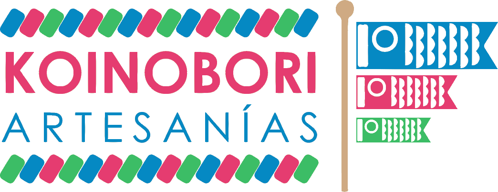

<ion-menu side="start" menuId="unico" contentId="principal">
  <ion-header>
    <div class="colorFondo" padding >
      
    </div>
    <ion-toolbar>

      <ion-title>

        <ion-text color='verde'><span> M</span></ion-text>
        <ion-text color='azul'><span> e</span></ion-text>
        <ion-text color='rosados'><span> n</span></ion-text>
        <ion-text color='verde'><span> &uacute;</span></ion-text>       

      </ion-title>
    </ion-toolbar>
  </ion-header>
  <ion-content class="outer-content ">


    <ion-list>
      <ion-menu-toggle autoHide="false">
        <ion-item *ngFor="let page of pages" (click)="siSale(page.titulo)"
          [routerLink]="page.componente">
          <ion-icon slot="start" color="{{page.color}}" name="{{page.icon}}" ></ion-icon>
          <ion-label color="{{page.color}}">{{ page.titulo }}</ion-label>          
        </ion-item>
      </ion-menu-toggle>


    </ion-list>
  </ion-content>
</ion-menu>